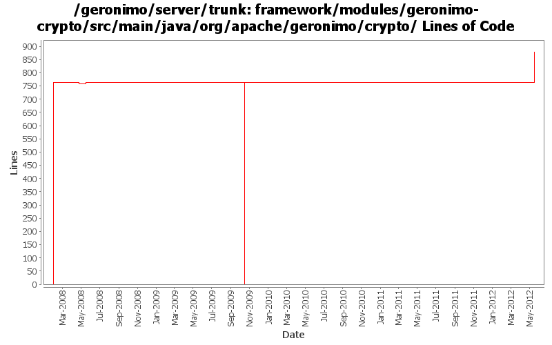

[root]/framework/modules/geronimo-crypto/src/main/java/org/apache/geronimo/crypto
 asn1
(51 files, 6492 lines)
asn1
(51 files, 6492 lines)
 cryptopro
(1 files, 62 lines)
cryptopro
(1 files, 62 lines)
 misc
(4 files, 188 lines)
misc
(4 files, 188 lines)
 oiw
(1 files, 35 lines)
oiw
(1 files, 35 lines)
 pkcs
(6 files, 921 lines)
pkcs
(6 files, 921 lines)
 sec
(1 files, 71 lines)
sec
(1 files, 71 lines)
 util
(3 files, 396 lines)
util
(3 files, 396 lines)
 x509
(57 files, 8265 lines)
x509
(57 files, 8265 lines)
 x9
(1 files, 123 lines)
x9
(1 files, 123 lines)
 crypto
(7 files, 338 lines)
crypto
(7 files, 338 lines)
 digests
(4 files, 1069 lines)
digests
(4 files, 1069 lines)
 modes
(1 files, 250 lines)
modes
(1 files, 250 lines)
 params
(18 files, 1168 lines)
params
(18 files, 1168 lines)
 encoders
(11 files, 1406 lines)
encoders
(11 files, 1406 lines)
 jce
(3 files, 872 lines)
jce
(3 files, 872 lines)
 interfaces
(1 files, 38 lines)
interfaces
(1 files, 38 lines)
 provider
(11 files, 3043 lines)
provider
(11 files, 3043 lines)

| Author | Changes | Lines of Code | Lines per Change |
|---|---|---|---|
| Totals | 56 (100.0%) | 2459 (100.0%) | 43.9 |
| kevan | 21 (37.5%) | 1545 (62.8%) | 73.5 |
| djencks | 14 (25.0%) | 764 (31.1%) | 54.5 |
| xiaming | 2 (3.6%) | 119 (4.8%) | 59.5 |
| gawor | 1 (1.8%) | 9 (0.4%) | 9.0 |
| vamsic007 | 11 (19.6%) | 7 (0.3%) | 0.6 |
| rwonly | 1 (1.8%) | 6 (0.2%) | 6.0 |
| jdillon | 4 (7.1%) | 6 (0.2%) | 1.5 |
| rickmcguire | 1 (1.8%) | 2 (0.1%) | 2.0 |
| xuhaihong | 1 (1.8%) | 1 (0.0%) | 1.0 |
Merge 1333350,1333352,1334031,1334300,GERONIMO-6345,GERONIMO-6348 into trunk
119 lines of code changed in 2 files:
GERONIMO-6058 Replace StringBuffer usage with StringBuilder
1 lines of code changed in 1 file:
GERONIMO-5638 Remove the encrypt(String) method from ConfiguredEncryption
6 lines of code changed in 1 file:
GERONIMO-4987 Use ConcurrentHashMap instead of Collections.synchronizedMap(new HashMap())
Patch provided by Jack Cai.
2 lines of code changed in 1 file:
GERONIMO-4916 step 2 move sandbox osgi framework into trunk
764 lines of code changed in 7 files:
GERONIMO-4916 step 1 remove old framwork
0 lines of code changed in 7 files:
ignore Windows-MY and Windows-ROOT keystores (GERONIMO-3864)
9 lines of code changed in 1 file:
More loggers back to statics
1 lines of code changed in 1 file:
(GERONIMO-3985) Use SLF4J as the primary logging facade for Geronimo
4 lines of code changed in 1 file:
Drop unused logging mucksie
0 lines of code changed in 1 file:
Drop unused imports
1 lines of code changed in 1 file:
svn props. In spite of setting svn props explicitly before the previous commit, the properties were not committed for some files.
0 lines of code changed in 3 files:
Attempt to preserve svn history. Damage control for revs 617595 and 617610.
7 lines of code changed in 7 files:
One last test attempt to preserve svn history. Damage control for revs 617595 and 617610.
0 lines of code changed in 1 file:
GERONIMO-1761 the svn mv util crypto got lost from my commit. this is adding the directory and files back. there only changes to the files were updates to the package name
783 lines of code changed in 7 files:
GERONIMO-1761 move util dir to crypto in test src. svn wouldn't let me move, earlier...
0 lines of code changed in 7 files:
GERONIMO-1761 move geronimo-util to geronimo-crypto. Still pending mv of one test directory that svn wouldn't let me move
762 lines of code changed in 7 files: